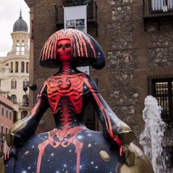
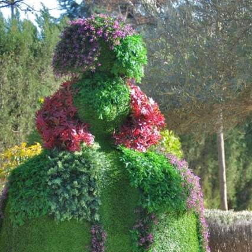

<ion-header>
  <ion-navbar>
    <button ion-button menuToggle>
      <ion-icon name="menu"></ion-icon>
    </button>
    <ion-title>Detalle Reto</ion-title>
  </ion-navbar>

  <ion-toolbar no-border-top>
    <ion-segment [(ngModel)]="detallereto" border-color = "#FFFFFF" color = "#FFFFFF">
      <ion-segment-button value="info" border-color = "#FFFFFF" color = "#FFFFFF">
        Info
      </ion-segment-button>
      <ion-segment-button value="hitos">
        Hitos
      </ion-segment-button>
      <ion-segment-button value="mapa">
        Mapa
      </ion-segment-button>
    </ion-segment>
  </ion-toolbar>

</ion-header>


<ion-content>
  <div [ngSwitch]="detallereto">
    <!-- Primer pestaña, información del reto-->
    <ion-list *ngSwitchCase="'info'">
      <ion-item>
        <ion-thumbnail item-start>
          
        </ion-thumbnail>
        <h2>Menina 1</h2>
      </ion-item>
      <ion-item>
        <ion-thumbnail item-start>
          
        </ion-thumbnail>
        <h2>Menina 2</h2>
      </ion-item>
      <ion-item>
        <ion-thumbnail item-start>
          
        </ion-thumbnail>
        <h2>Menina 3</h2>
      </ion-item>
      <ion-item>
        <ion-thumbnail item-start>
          
        </ion-thumbnail>
        <h2>Menina 4</h2>
      </ion-item>
    </ion-list>

    <!-- Segunda pestaña, lista de hitos-->
    <ion-list *ngSwitchCase="'hitos'">
      <ion-item>
        <ion-thumbnail item-start>
          
        </ion-thumbnail>
        <h2>Menina 5</h2>
      </ion-item>
      <ion-item>
        <ion-thumbnail item-start>
          
        </ion-thumbnail>
        <h2>Menina 6</h2>
      </ion-item>
      <ion-item>
        <ion-thumbnail item-start>
          
        </ion-thumbnail>
        <h2>Menina 7</h2>
      </ion-item>
     
    </ion-list>

    
    <ion-list *ngSwitchCase="'mapa'">

      <mapa></mapa>
      
    </ion-list>
  </div>
</ion-content>